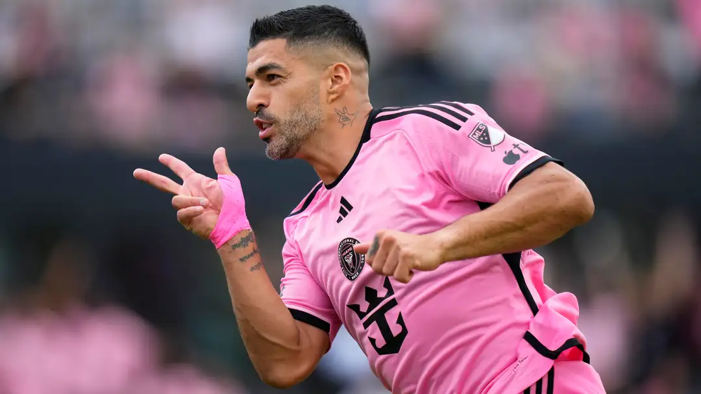

Luis Suarez saves the day! Ex-Barcelona star nets last-gasp equalizer in Inter Miami's CONCACAF Champions Cup draw with Nashville SC
Luis Suarez provided Inter Miami with a huge late goal, netting in the 95th minute to secure a 2-2 draw in the club's CONCACAF Champions Cup opener.
In the final moments of Thursday's CONCACAF Champions Cup opener, Inter Miami found themselves down 2-1. Lionel Messi had brought them back within a goal thanks to a Suarez assist but, five minutes into stoppage time, Suarez made his mark with a goal of his own.
For that goal, Suarez combined with another former Barca teammate, Sergio Busquets. The midfielder's perfectly-placed cross fell right onto Suarez's head as he fired home a crucial away goal to level the score at 2-2.
